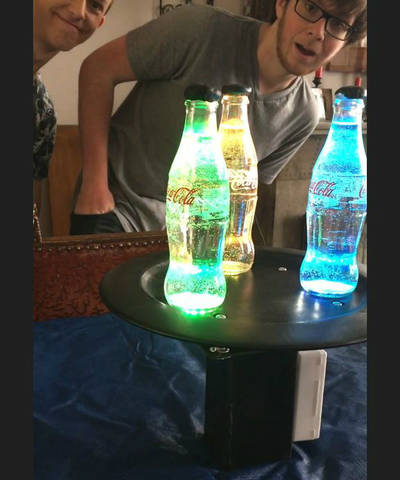
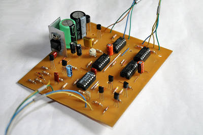

2016-06-02 - Nº 57

Editorial
Esta é a Newsletter Nº 57 que se apresenta com o mesmo formato que as anteriores. Se gostar da Newsletter partilhe-a!
Todas as Newsletters encontram-se indexadas no link.
Esta Newsletter tem os seguintes tópicos:
Esta semana tivemos a visita do Pedro Arede do "O Corvo" que fez uma reportagem sobre o altLab.
Nas notícias, esta semana a Samsung apresentou um SSD de 512GB fabricado numa única BGA (ball grid array) especialmente feito para os equipamentos da próxima geração. A ARM apresentou o novo processador ARM Cortex-73 que melhora ainda mais o desempenho dos anteriores. A Microchip anunciou uma interface gráfica para a criação de ambientes gráficos com os micro-controladores PIC32. Esta, designada por MPLAB® Harmony Graphics Composer permite programar interfaces gráficos, utilizando um interface WYSIWYG (What-You-See-is-What-You-Get).
Na Newsletter desta semana apresentamos diversos projetos de maker. Na rubrica "Documentação" apresentamos sete livros (eBooks) que podem ser descarregados livremente e que esta semana são sobre Perl para impacientes, Python para Biólogos, Gestão de projectos open-source com técnicas Agile usando o MS Visual Studio Online, estratégias de Cloud empresarial, aplicações de electrónica, introdução à electrónica e um livro de pintar "E for Electronics". Foi também publicada a revista MagPI Nº 46 de Junho de 2016.
 João Alves ([email protected])
João Alves ([email protected])
O conteúdo da Newsletter encontra-se sob a licença  Creative Commons Attribution-NonCommercial-ShareAlike 4.0 International License.
Creative Commons Attribution-NonCommercial-ShareAlike 4.0 International License.
Novidades da Semana ^
-
"Samsung Electronics, the world leader in advanced memory technology, announced today that it has begun mass producing the industry’s first NVMe* PCIe solid state drive (SSD) in a single ball grid array (BGA) package, for use in next-generation PCs and ultra-slim notebook PCs. The new BGA NVMe SSD, named PM971-NVMe, features an extremely compact package that contains all essential SSD components including NAND flash memory, DRAM and controller while delivering outstanding performance."
New ARM Cortex-A73 Processor drives efficiency, performance for mobile designs
"Consider this: The performance of smartphones, nearly all of which are powered by ARM processors, has grown by 100x since 2009. One hundred times in seven years! With that has emerged entirely new functionality, lightning-fast user responsiveness, and immersive user experiences – all in the same power footprint. It’s really an unrivaled engineering achievement, given the challenging design constraints in the mobile space. This performance, functionality and user experience dynamic has driven a truly remarkable market, which will see more than 1.5 billion handsets sold in 2016. With this consumer embrace, smart phone design has become, in many ways, the platform for future innovation. Augmented and virtual reality, ultra-HD visualization, object-based audio processing or computer vision all underlie the demand for extra system performance. At the same time, smart phone designs have slimmed considerably in recently years, which limits thermal dissipation and ratchets up the need for thoughtful power management design. Battery capacity improvement cannot continue as smartphones have gotten as large as they practically can. To continue delivering more immersive user experiences and staying on the smartphone innovation path we’ve blazed in the past decade, we need to deliver more sustained performance with higher efficiency."
Microchip Announces Graphical User Interface Composer Tool for MPLAB® Harmony
"Microchip Technology Inc., a leading provider of microcontroller, mixed-signal, analog and Flash-IP solutions, today announced the MPLAB® Harmony Graphics Composer (MHGC), a modern and flexible graphical user interface (GUI) composer tool. MHGC is a free development tool for developing GUIs for all PIC32 microcontrollers through Microchip’s Harmony Configurator and MPLAB X Integrated Development Environment (IDE). The software allows anyone to create branded content using the Harmony Graphics Library, in conjunction with their custom assets, to create GUIs in a What-You-See-is-What-You-Get (WYSIWYG) design model, without complex and cumbersome coding."
Outras notícias
- CAT® S60 Thermal capabilities and sdk announced ahead of june launch
- Print a circuit board using just your printer and PRINTEM
- BCN3D Technologies releases open source files for BCN3D Sigma 3D printer
- Latest ARM Premium Mobile Technology to Drive Immersive Experiences
- BBC's micro:bit retail shipments near
- Light Rider - World's first 3D printed motorcycle
- Robô opera em pulmão pela primeira vez em Portugal
Ciência e Tecnologia ^
Senseonics receives CE Mark for implantable continuous glucose monitoring system
"Senseonics' offering is a pill-sized sensor that is entirely implanted in the user’s upper arm so that it can continuously monitor their glucose levels. The device is meant to last at least 90 days before it needs to be replaced — in contrast to the five to seven days that current not-quite-so-invasive CGMs last. Goodnow said the company would begin commercialization in Sweden in partnership with the company’s exclusive distributor, Rubin Medical."
Skintrack technology turns arm into smartwatch touchpad
"Ever since the advent of smartwatches, technologists have been looking to expand interactions beyond the confines of the small watch face. A new wearable technology developed at Carnegie Mellon University suggests turning the entire lower arm into a touchpad. Called SkinTrack and developed by the Human-Computer Interaction Institute’s Future Interfaces Group, the new system allows for continuous touch tracking on the hands and arms. It also can detect touches at discrete locations on the skin, enabling functionality similar to buttons or slider controls. Previous “skin to screen” approaches have employed flexible overlays, interactive textiles and projector/camera combinations that can be cumbersome. SkinTrack, by contrast, requires only that the user wear a special ring, which propagates a low-energy, high-frequency signal through the skin when the finger touches or nears the skin surface."
Forget the “Brick”, This Power Supply for Wearables Is Soft, Stretchable, and Solar-Powered
"Skin-like wearables—sensors and other electronics that can be worn comfortably for days at a time because they stretch and feel just like skin—made a big splash at CES. But the first generation of these “electronic tattoos” are externally powered, that is, they harvest RF energy to respond to an external reader. That’s fine for a limited range of applications, when you want to make spot checks of somebody’s temperature, say. For anything else, though, wearables need power on board—that means batteries and some way to charge them. But, to date, a power supply has represented the antithesis of soft, conforming, skinlike electronics: we don’t call an external power supply a brick for nothing."
Milestone in solar cell efficiency by UNSW engineers
"A new solar cell configuration developed by engineers at the University of New South Wales has pushed sunlight-to-electricity conversion efficiency to 34.5% – establishing a new world record for unfocused sunlight and nudging closer to the theoretical limits for such a device. The record was set by Dr Mark Keevers and Professor Martin Green, Senior Research Fellow and Director, respectively, of UNSW’s Australian Centre for Advanced Photovoltaics, using a 28-cm2 four-junction mini-module – embedded in a prism – that extracts the maximum energy from sunlight. It does this by splitting the incoming rays into four bands, using a hybrid four-junction receiver to squeeze even more electricity from each beam of sunlight."
Autonomous Flying Microrobots (RoboBees)
"There is nothing we can take off-the-shelf to create the tiny flapping wings required to mimic the flight of insects. New technologies must be explored to overcome challenges for microfabrication, artificial muscles, bio-inspired sensors, compact power storage, ultra low power computing, and programming methods for a colony of artificial insects. Inspired by the biology of a bee, researchers at the Wyss Institute, Harvard's School of Engineering and Applied Sciences (SEAS) and Northeastern University are developing RoboBees, man-made systems that could perform myriad roles in agriculture or disaster relief. A Robobee measures about half the size of a paper clip, weighs less than one-tenth of a gram, and flies using “artificial muscles” comprised of materials that contract when a voltage is applied."
UVA Determines ‘Fountain of Youth’ Gene Helps Prevent Heart Attack, Stroke
"A gene that scientific dogma insists is inactive in adults actually plays a vital role in preventing the underlying cause of most heart attacks and strokes, researchers at the University of Virginia School of Medicine have determined. The findings open a new avenue for battling those deadly conditions and raise the tantalizing prospect that doctors could use the gene to prevent or delay at least some of the effects of aging."
Documentação ^
A documentação é parte essencial do processo de aprendizagem e a Internet além de artigos interessantes de explorar também tem alguma documentação em formato PDF interessante de ler. Todos os links aqui apresentados são para conteúdo disponibilizado livremente pelo editor do livro.
Livros

-
"Impatient Perl is designed for individuals who wish to learn Perl or individuals that already program in Perl and do not have the patience to search for information to learn and use Perl. The book should be a useful desk reference for common Perl related questions."
Python for Biologists: A complete programming course for beginners
"Learning to program is one of the best investments that you can make for your research and your career. Python for biologists is a complete programming course for beginners that will give you the skills you need to tackle common biological and bioinformatics problems. "
Managing Agile Open-Source Software Projects with Microsoft Visual Studio Online
"With this ebook, the ALM Rangers share their best practices in managing solution requirements and shipping solutions in an agile environment, an environment where transparency, simplicity, and trust prevail. The ebook is for Agile development teams and their Scrum Masters who want to explore and learn from the authors’ “dogfooding” experiences and their continuous adaptation of software requirements management."
-
"Lead the journey to the cloud and drive innovation! Discover what makes the cloud so compelling to enterprises; with which applications you should start your cloud journey; how your organization will change, and how skill sets will evolve; how to measure progress; how to think about security, compliance, and business buy-in; and how to exploit the ever-growing feature set that the cloud offers to gain strategic and competitive advantage."
Electronic Applications - An Online Text
"Electronic Applications - An Online Text"
Introduction to Electronics - An Online Text
"Introduction to Electronics - An Online Text"
Ladyada’s "E is for Electronics"
"Ladyada's "E is for Electronics" is a coloring book adventure with electronic components and their inventors. Makers of all ages can learn, color, and share common parts and historical figures throughout history. Explore the world of electronics with Ladyada as your guide!"
Revistas
-
"Electronics with the Raspberry Pi - Build your first circuits and projects in easy steps; Raspberry Pi Zero Updgrade - Learn about the latest Pi Zero and get one free when you subscribe; Hack an RC controller with Pi Zero: Upgrade your robot project today!; Measure gravity with the Raspberry Pi - Science made simple with the Sense HAT; And much, much more!"
Modelos 3D ^
Com a disponibilidade de ferramentas que permitem dar azo a nossa imaginação na criação de peças 3D e espaços como o thingiverse para as publicar, esta rubrica apresenta alguns modelos selecionados que poderão ser úteis.
Pocket Calipers
I find myself thinking about different things to make throughout the day, but I only have calipers on me when I'm at home, so I'm left to a best guess. Now, with these handy little pocket calipers, that best guess just got even better! Obviously there's no way to get these as accurate as some digital calipers, but these will allow you to get very close measurements up to 50mm (width) and 40mm (depth). There is even a screw to hold your position in case you can't write your measurement down right away. Hopefully these will come in handy for makers all over.
All three pieces are already in the proper orientation for printing and nothing needs supports! Make sure you leave the right side upside down unless you plan on adding supports yourself.
Students and makers of all ages can use this project to learn how to use a pair of calipers as well as the importance of tolerances between parts. Not to mention, the importance of printing in very low layer heights and printing text vertically to preserve its quality.
It is a very simple project and even novice makers and students should be able to complete this project easily.
I printed this in just over an hour, so it has potential to be used as a classroom or maker space project. Assembly takes about 1 minute.
This is my very first thing and my entry into the #MakerEdChallenge2.
Basic Box for Electronics, etc.
Just a basic printable box.
Angle meter / Protractor
Snap-Together Model Mountain Bike
About a year ago, I created a model road bike, that printed out in one sheet and snapped together. It's been pretty popular, so I thought it could use a companion for those of us who prefer to take their desk toys off-road. I hope you all enjoy it!
printing and assembling process is the same as the road bike, however due to the larger tires and frame this takes about twice as long (about 1hr on my printer, your mileage may vary). However, the fit of the parts should be better than before, and the parts are more detailed. Like the road bike, a knife is recommended to help separate the parts and clean them up, and a bit of superglue doesn't hurt.
If you want to display it more prominently, you should also print out my Snap-together model Bike Stand.
Projetos Maker ^
Diversos Projetos interessantes.
TeleBall - Retro Handheld Game Console

"TeleBall is a handheld game console. You cannot buy it. You need to build it by yourself. It lets you play BreakOut in single-player mode using one device and Tennis for Two in multi-player mode using two devices communicating via radio. TeleBall is pretty retro and very minimalistic: It features an 8x8 pixel LED matrix display, a paddle as game controller and one button. Therefore, the range of possible games is limited but you will be surprised how much fun and even zenlike meditation this kind of gameplay can bring you, particularly when you play Tennis for Two with a friend."
-
"Taking your pulse is as simple as holding a finger to your neck or wrist and timing the beats with your watch. But if you want to record the data or use it to trigger events, you need to turn that mechanical pulsing action into an electrical signal. This pulse sensor fits over a fingertip and uses the amount of infrared light reflected by the blood circulating inside to do just that."
-
"This project is the RGB LED display (16x10) based on WS2812B LEDs. Its core is the ATmega644pa controller running on 16 MHz frequency. The board has several buttons (up, down, left, right, forward, back, reset) and the ADXL345 accelerometer. It also has the 5-digit numeric display. There're also UART interface (MAX232A-based) and SPI programming interface for USBASP or similar programmer."
Cheap Wireless device to Control Arduino from anywhere in the world
"#DTMF stands for DUAL TONE MULTIPLE FREQUENCY , in which we are going to use Mobile phone to make its as a wireless device, it works on the frequency which we generate on keypad of caller phone."
-
"I've been playing with the idea of panels that are 3d printed in PLA, but that flex in only specific directions (I intend to make a Halloween costume using this). There are plenty of instances of plywood that's laser cut to accomplish this (like this from kofaktorlab), so I modified the patterns and started printing. And what better initial project with it than twisted lamps using 2812s to allow whatever colors I want. (Rainbows. Of course.) The CRASH Space art show was coming up, so I decided to make a set of lanterns to hang in the hallway and react to people walking beneath them. I've written everything up, but also take a look at the videos I created about the whole process. I even made one about the laser cut stand that I created to hold them at the Bay Area Maker Faire."
Egor V.1 Animatronic: basic, autonomous, low cost artificial character.
"After posting my previous two advanced animatronic models, I wanted to get back to basics and show you how to make a character for around 30 pounds using easily accessible gear. There will be no 3D printing..C.A.D or anything of the such, we are going back to the 80's at the height of animatronics with this system design (minus arduino and processing control of course). In order to keep the cost down we will be using what may be considered non-standard design. The objective of this tutorial is to create a simple autonomous animatronic characters that will run a constant high variable loop which will produce some interesting features. I will also create a simple controller for the mouse so you will be able to take this element out of autonomous control and into man operation smoothly for more focused mouth function. This may be useful if you want to make a character that needs to manually replicate voice output for the character. I want to state here that the objective of this project is not to create something super polished and smooth, but fun and hopefully open you up to thinking about how you could adapt the foundation of this system for yourself. I hope you enjoy this tutorial and if you like it progress on to one of my other my complex systems."
Build an Arduino-Controlled AM/FM/SW Radio
"The idea of a single chip radio is intriguing. The prospect is especially interesting to me because, frankly, I envy the analog skills I associate with building a radio receiver. When I browsed the circuit literature in the area, I came across the Silicon Labs collection. One of their chips, the Si4844-A10 caught my attention. This receiver has AM/FM/SW capability with all the bells and whistles and it is designed to work with a microprocessor. Best of all, the support components required are mainly associated with the microprocessor display and control functions with only a small amount of antenna support needed. I couldnt resist taking the plunge."
PiPhone A Raspberry Pi based Smartphone
"Heres my latest DIY project, a smartphone based on a Raspberry Pi. Its called wait for it the PiPhone. It makes use an Adafruit touchscreen interface and a Sim900 GSM/GPRS module to make phone calls. Its more of a proof of concept to see what could be done with a relatively small form factor with off-the-shelf (cheap) components. I dont expect everyone to be rushing out to build this one, but I had great fun in doing it, as it builds quite nicely on my previous projects, especially the Lapse Pi, a touchscreen time-lapse controller, and uses most of the same hardware. What makes this different from the Timelapse controller is the addition of a a SIM900 GSM module, which is connected via UART to the Raspberry Pi. Also, I got myself a LiPo battery that would fit nicely between the TFT screen and the Raspberry Pi, so it could be used standalone, without any wires hanging off it whatsoever. Heres the finished PiPhone."
Open Source ocean data buoy project
"The next steps for the wave buoy project involves collecting accelerometer and gyroscope data from the onboard IMU and filtering/processing the data with a laptop to determine orientation and position. The math needed to perform these computations is too much for an arduino alone, so for now I plan to transmit the IMU data to my laptop with an Xbee and let the laptop do all the heavy lifting. Later on, the laptop will be replaced by a Raspberry Pi or other Linux based computer board, but for now it easier for me to develop everything in Matlab and then convert the code to C/C++ or something else in the future. Just personal preference."
-
"The metropolitan in it's natural habitat; unaware, oblivious, purposefully deafened and subsequent prey. To increase perception thus safety, we wed an Arduino Nano and ultrasonic sensor to regulate volume to proximity to some one behind you; easily deactivated per environment and rechargeable. Beyond this proof of concept, intention for apparel or accessory (purse, back pack) embedding is ideal."
MicroFAT: A File System for Microcontrollers
"Microcontrollers are becoming the core of many electronic projects for hobbyists and the norm in electronic design overall. With the complexity of projects increasing and the introduction of the IoT, it will not be long before micro users will need to also increase the capabilities of microcontrollers. A common use for microcontrollers is to log data from sensors such as temperature, humidity, and other stimuli. This data can be streamed to an I2C EEPROM and then read back when this data is to be sent to an external server (via the IoT). If the user wishes to store separate instances of data (for example, different times of the day), then the memory needs to contain information regarding the time the data was sent and how the memory is organised. While the user could design a system to cope with such matters, it would be easier to implement a file system such as FAT. However, many micros are not capable of using the FAT file system because of the memory requirements."
-
"A Raspberry Pi powered timelapse rig controlled through a web app on your phone. When looking into time lapse rails, i ran across David Hunts post on building a DIY version using raspberry PI. The article was quite nice with a lot of information on the hardware i however did not want to buy an extra touch screen as was used in that build.... and running it through command line sounded pretty insane, so i went on to a quest to do something about it :) A couple of evenings later, there was a solution i put together a little web app that runs on a nodeJS server on the PI which can then be accessed through the browser on your mobile device if it is sharing its wifi with the raspberry. Since i also had hell of a time trying to piece the whole picture together when building the hardware, i also figured i should create a dumb down guide which someone with very little knowledge on the subject should be able to follow."
Linear Clock using Arduino + DS1307 + Neopixel: Re-using some hardware.
"From previous projects I had an Arduino UNO and a Neopixel LED strip left, and wanted to make something different. Because Neopixel strip has 60 LED lights, thought to use it as a big clock. To indicate the Hours, a red 5-LED segment is used (60 LED / 12 segments = 5 LED). The Minutes are shown with a single green LED, and the seconds using one blue LED."
DIY Air Quality Meter & Emissions Tester
"This little project shows how a simple hand held meter can be made for testing for air pollutants such as smoke and dust. It is based on the Sharp GP2Y1010AU0F sensor which measures light reflected from airborne particulates passing through the sensor. It is very similar in operation to the popular GP2Y0A21YK0F from Sharp which is used for measuring distance using reflected infrared light."
-
"An Arduino and two insulated, twisted wires can be used to detect an approaching human (or animal). I set up a sample circuit to warn approaching people away from my desk. The voice module in this instructable is optional--you can just use the twisted wire and an led to try this (or use the Arduino's onboard led on pin 13--change pin 5 in the sketch to pin 13)."
Sound Sensing Alarm Clock Light
"First I want to say that this is a cool project for any range of skill level. If you are a beginner with Arduino and are nervous about complexity I encourage you to give this a try as I will try to as helpful as I can and its always best to jump into a project if you want to learn more. This Instructable shows you how to create a device that senses when your alarm on your phone goes off (or any alarm near it for that matter) and turns on an LED above your bed in order to wake you up in the mornings. I had this idea while living in a noisy house at college where one of my house mates has trouble sleeping because other people are too loud at night. My housemate could not wear hear pugs to bed because he would sleep through his alarm."
-
"I have built EEG based bot, Automation, VR navigation, etc! This time i am building the EEG based mood light."
-
"A rallytimer is a really intresting device to improve your rating during a regularity rally. As you know, its quite difficult to give the notes, check the time and the distance at the same times. Furthermore, timetables are often really unpleasant to read in a rally car which is on the road or during the night. There are some solutions to facilitate your work during a regularity rally but this kind of device is really expensive and you have to install them in the car with a lot of sensors and specific power supply. With the rallytimer you just have to powered it ( with the 12V alimentation of the car) and enjoy your regularity test."
Simplistic is not always boring
"The reasoning behind our work is we wanted something to be self moving with little to no help of the viewer, that would continue for a good amount of time, but along those lines demonstrate a deeper understanding of the physics in simple motions. Science parts: the Simple Motor converts electrical energy (from a battery or voltage source) into mechanical energy (used to cause rotation). The electrons flow from negative to positive in circuitry.Using the right hand rule, our motor spins clockwise.My partner and I did a thirty loop 22 g wire because it experiences thirty times more force then a single wrap by itself. the science behind the small magnet use is, the top and bottom sections of the loop act as current carrying wires in the region of a magnetic field to help the wire keep a continuous spin."
Arduino & Neopixel Coke Bottle Party Light

"So my son Doon spots a very cool party light made of old coke bottles and the gooey innards of Glow Sticks, and asks if we can make one for his upcoming School Exams Are Over Blowout PartAYYY!!! I say sure, but wouldn't you rather have some of those spiffy Adafruit Neopixel Rings we've been reading about... He gives me a blank stare. Because fact is he doesn't know what I'm talking about, but Dad has spotted an opportunity to play with those Neopixel rings HE's been reading about, and we all know one of the top 10 reasons that geek dads procreate is to have an excuse to play with cool gadgets they tell everyone are for their kids."
IoT - Controlling a Raspberry Pi Robot over internet with HTML and shell scripts only
"In this instructable, we will learn how to create a fully controlled IoT Raspberry Pi Robot. The idea is to control the robot (or anything), using low level commands written with shell scripts commanded straight from the HTML page. Not using higher level languages as Python for example, makes the robot very responsive and quick to act."
-
"Many of us use bikes for commuting and leisure, and many of us suffer from long and dark winters as well! If that's the case, you probably have a pair of bright front & rear lights, which make spotting you much easier for drivers and other road users, making cycling much safer. There is however another issue when riding on the road: turn signals! There is a hand signal convention, but I have the feeling that many drivers don't understand it, or maybe it's dark, or you're not confident to take your hand out of the handlebar. This motivated my friend and I to build an electronic turn signal, which will be placed close to the rear light with a control switch in the handlebar."
-
"Maruti Suzuki alto car is a 800CC 3 cylinder engine car. it's a manual drive car , so i need to fix RPM meter for it because it doesn't come factory fitted RPM meter. So i have searched ebay and local market to find suitable one. unfortunately there is a no rpm meter for 3 cylinder. each rpm meter has 4 , 6 , 8 cylinder capacity levels. So here i have made custom RPM meter using Arduino based electronics"
Arduino-controlled curtain roller
"This project is a bit different from what we've done so far, since you need to make the stand and the handle for the curtain. In the video you can see how we made it and the materials we used, but it's really something that you can put together from scraps you have lying around in your workshop."
-
"In this Instructables, well build an automated color chip sorter using a meArm robot arm and a TCS3200 color sensor. This is part of my intermediate level curriculum for middle and high school students at my robotics workshop. MeArm is an excellent educational tool to teach students about mechatronics and inverse kinematics. Combining MeArm with a TCS3200 color sensor which is an economical solution for detecting color by utilizing red, green, and blue led lights to measure reflected RGB values, we could build an automated color chip sorter that teaches students about automation using a robot."
-
"I put this project together for the OSH Park Bring A Hack meetup at the 2016 Bay Area Maker Faire. It's Tricorder inspired, but can't quite sense everything, so the name "Bicorder" seemed fitting. It currently has a 3-axis magnetometer, a relative humidity / temperature sensor and an infrared range finder."
-
"O prottipo de rob controlado por joystick tem a habilidade de locomover-se em todas as direes, alm de conter itens relacionados ao meio ambiente. Para atender a estes requisitos foi necessrio escolher sensores, motores, processadores, etc. Assim, desenvolveu-se um rob com possibilidade de controlar umidade, temperatura e possveis vazamento de gases, com sinais sonoros e visuais. Esse rob, tem um sistema de ligao por RFID. Onde s posso funcionar aps o operador passar o carto de liberao."
Arduino Colour Sensor Under 1$
"So here is my first instructable,Coming to the topic,this is an arduino compatible colour sensor that is extremely made at low cost(don't go on the image I ruined it whole while de attaching it from the robot)...."
Modified Heathkit HD-1410 electronic keyer

"HD-1410 is quiet popular iambic keyer which is manufactured around 1970's by Heathkit. The original HD-1410 keyer is designed using 5 commonly available 74LS series TTL ICs and 8 transistors. Other than iambic operation it has an option to adjust sidetone frequency and support for (external) single-paddle key unit. In this project we redesign original HD-1410 electronic keyer with today's commonly available components. In this new design the key components which we replace are transistors, diodes and power supply section of original HD-1410 circuit. Most of the NPN transistors in original design are replaced with KSP42 and KSP10 transistors, and all the PNP transistors are replaced with KSP92 transistors. To keep everything simple we also use same TTL chip-set with this new design."
Optically Isolated LPT Breakout Board for CNC & Routers
"Optically isolated parallel port break out board designed for Hobby CNC, Routers and Motion controller, This Board is an easy solution to drive stepper Motor driver through PC parallel port, The Board is compatible with various CNC software specially made for LPT port data output. The board has been tested with MACH3 CNC software. All outputs are optically isolated and inverse, all inputs are optical isolated and can be used as emergency switch, limit switch, home switch and feedbacks. The Opt coupler and inverter require power supply at both PC side and output side. USB connector and CN5 Screw terminal provided for PC side power supply input and CN4 for output side power supply 7 to 36V DC. The board has 12 output pins that can control various devices such as stepping motor drivers, Plasma Torch, Pump for coolant, spindle, 5 Input pins are provided for limit or home switches, feedbacks, Emergency switch. All inputs has 470E for TTL Voltage input required driving the inputs."
Simple arduino car using HC-06 Bluetooth Module
"The easiest way to build an Arduino car and control it with your android device."
-
"We decided to design a greenhouse as subject for our electronic project. The goal was to regulate the temperature inside the greenhouse thanks a lamp, a servomotor to open a window and a PC fan. We wanted to maintain a quite constant level of soil moisture with a pump and to receive temperature, soil moisture and luminosity measurements. Finally, we designed a website to be able to control it remotely. This project was made for our electronic course and we wanted to use a raspberry pi and an arduino board. We know that it can be improved in so many ways but we want to give you ideas to redo it and improve it."
AutoResetRRR Automatically reset routers/cameras/servers
"AutoResetRRR is a kind electronic frustration reducing device: it cuts the power periodically to devices that can go nuts (routers, net cams, servers), but it does give a heads up. If all is well, they can shut down safely and start back up. If not, the power cycle can fix a thing or two. I have a raspberry pi time-lapse rig that sometimes hangs. And a few simple IP cameras also used for time lapse, all a bit inaccessible. And my modem/router that comes from the ISP gets the slow internet syndrome every now and then."
Multipurpose Mobile Manipulator Mk 1
"Build your own DIY giant robot that plays the piano, draws pictures, prepares meals, waters plants, engages in lightsaber duels and more. The Multipurpose Mobile Manipulator is an advanced open-source human-size mobile robotics platform for students, educators, hobbyists, artists and researchers alike."
-
"This is the perfect project for those who frequently place their keys here and there and are unable to find it when needed the most. So here I bring Smart Keychain, a smart companion for your keys. No worries where are keys are just take out your smart phone and give a trigger to your keys, they will automatically says where they are. I made this project using ESP8266 12E development board. Lets see how to make it..."
Arduino Password Security System with magnetic door sensors
"In this Instructables guide I will show you how to make your own password security system by using the Arduino uno board and some magnetic door switches. I made my own circuit by using the ATmega328 micro controller but this is an optional step. In this guide I will help you to make it easily on breadboard by using the Arduino uno board, and I will give you some extra tips on how you can make your own Arduino-based custom circuit. By using this system you will be able to arm and disarm the security system. You can disarm it by typing the correct password and pressing the '*' button. If you want to change the current password, you can do it by pressing the 'B' button, and if you want to skip or abort an operation you can do it by pressing the '#' button. It also has a buzzer for making various tones during operation."
Analog Input Protection Circuit
"Analog input pins are a common feature of many microcontroller boards. However, due to the operating voltage of the board, you are limited to a maximum analog input voltage (1.8V, 3.3V, 5V), beyond which you will end up frying your board. But that low voltage range is pretty restrictive if you would like to apply some of the functionality of a microcontroller to a measurement outside that range. To get around this, you can create an analog input protection circuit to allow you to make measurements on higher voltages, while minimizing the risk of frying your pin or whole board. Here I will go over the design method I used to create a voltage divider and diode clamp to protect an analog input pin on a uC32 microcontroller, but these concepts can be applied to creating a circuit for any board. A basic knowledge of circuit theory and analog components would be helpful in understanding what is going on, but is not strictly necessary to just follow along."
-

"The Classroom Clock is a DIY digital clock designed and optimized for teachers. When I began teaching, I found it very difficult to keep track of the rotating block schedule. Classroom Clock solves this problem."
Parallel Port Breakout board with Buffer for CNC & Routers
"Parallel port I/O break out board designed for Hobby CNC, Routers and Motion controller , This Board is an easy solution to driver stepper Motor driver, AC Servo (with Step-DIR Driver) and DC servo (with Step-DIR Driver), The Board is compatible with various CNC software specially made for LPT port data out. The board has been tested with MACH3 CNC software. All outputs are buffered, all inputs are optical isolated and can be used as emergency switch, limit switch and home switch. The board has 12 output pins that can control various devices such as stepping motor drivers, AC Servo Driver, DC Servo Driver, Plasma Torch, Pump for coolant, spindle, 5 Input pins are provided for limit or home switches, feedbacks, Emergency switch. All inputs has 470E for current controlled and TTL Voltage input required driving the inputs. This board can be powered with USB input or DC input supply 7V to 36V, keep jumper J2 open in case of USB supply input. Board has Screw Terminals for Inputs and out connections and also provided with 4X6Pin header connecters for outputs. J15 is connected directly to parallel port pins for testing purpose."
3D Stereo Audio Spectrum Visualizer
"In this instructable, we will use the electronic circuit we put together from our Arduino based Audio Spectrum Visualizer project to drive our jolliCube re-arranged with the 2 sets of 3D 8x8x4 LED Matrix displays placed side by side to form a 3D Stereo Audio Spectrum Visualizer Display. To build this project, basic electronics knowledge with electronics component soldering skill and some knowledge on using the Arduino are required."
Make your own IR remote that can reach anywhere
"My home theater is far away from my bed and the remote is unreachable there. Many a time, I thought of controlling the home theater from my bed to enjoy music anytime (due to laziness of course). So, I did some search and found this great video from GreatScott. That video provided me enough information to get started. Then further, I taught myself the remaining things to send and receive IR codes from IR receiver and transmitter. After building this you'll be able to control anything that is unreachable from your spot, provided you have enough wires."
-
"After building my QFH antenna, I became more interested in satellite communications. The QFH antenna works great for circularly polarized signals like weather satellites, but something like a yagi or log-periodic antenna is better for most sats, because it can be pointed directly at the sat. After a short break where I interned at Keysight Technologies then finished my last semester at school, I built a tape measure yagi for 145.8 MHz to receive ISS SSTV broadcasts. It works great for that, but after a few passes I started to wonder if there was a better way. Ideally, some way to track the sat with a computer, automatically. Commercial solutions exist of course, like the Yaesu G-5500. This is a bit expensive for my tastes, and meant for more permanent installations. SatNOGS is a great open-source solution, if you have access to a 3D printer and some parts. I still want to build the SatNOGS rotor, but first I wanted to see if I could build my own version cheaper."
Supercapacitor Backup with Wireless Charging
"The goal of this project is to demonstrate IDTs wireless charging technology and the use of supercapacitors as an alternative to battery backups. The device also uses an XBee wireless module to communicate with another identical device with each sending the state of charge to the other. The incoming data is then processed through a microcontroller and written to an LCD display via I2C. "
That's all Folks!